♪ Play Music
Shakespeare’s Quill
Home
Biography
Works
Quotes
Gallery
Resources
Gallery of Shakespeare
Scenes, moments, and echoes through time
Click the photo
What did you do?
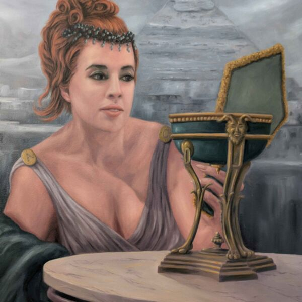 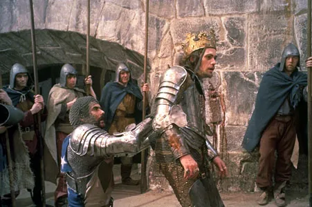 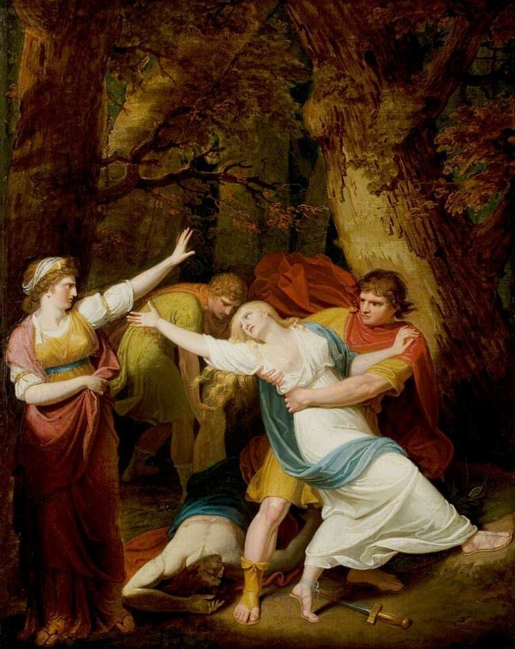 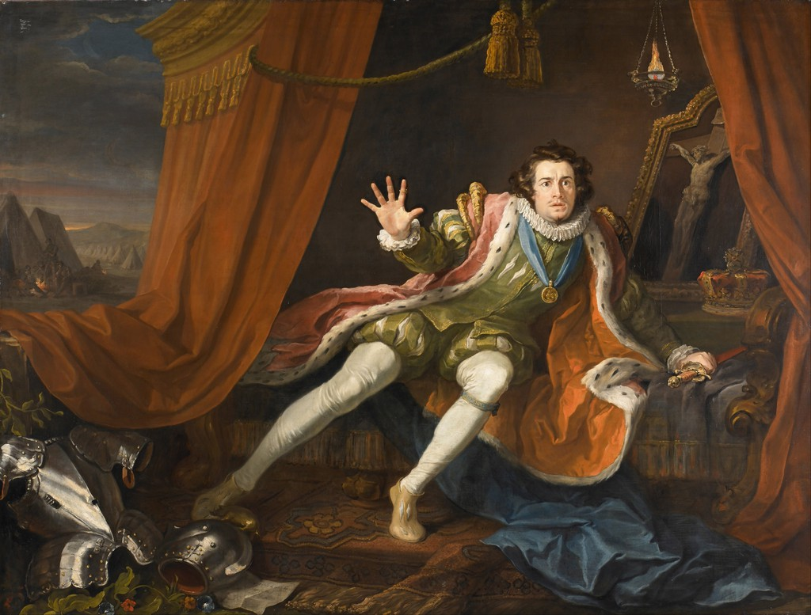
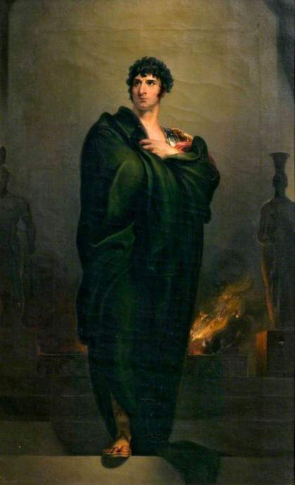
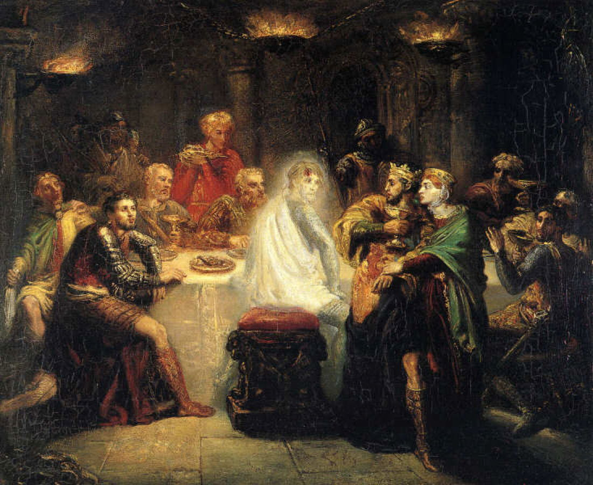
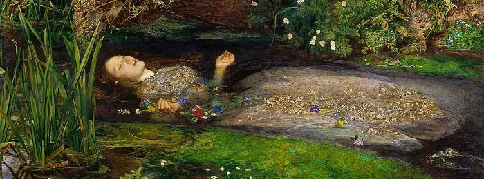 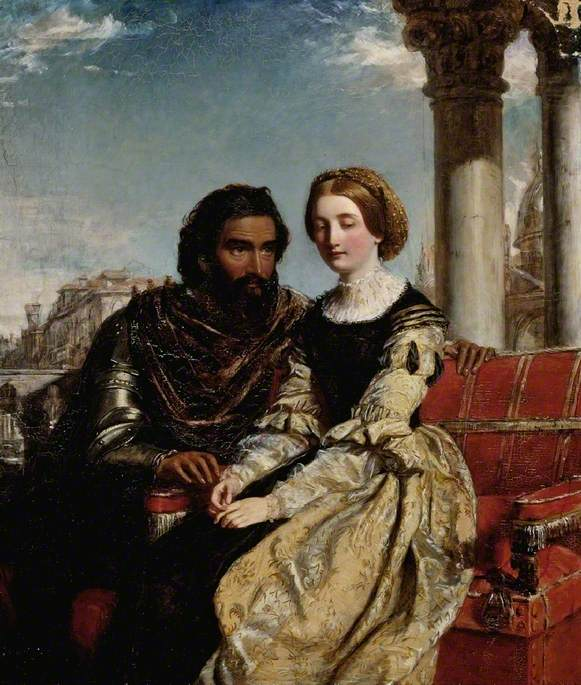
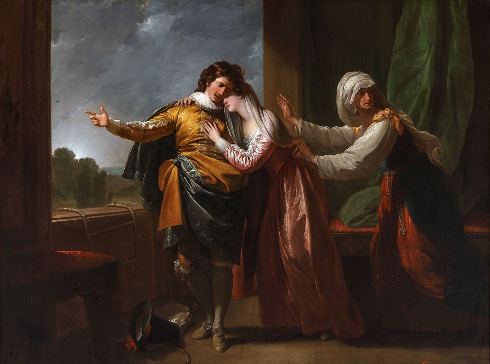
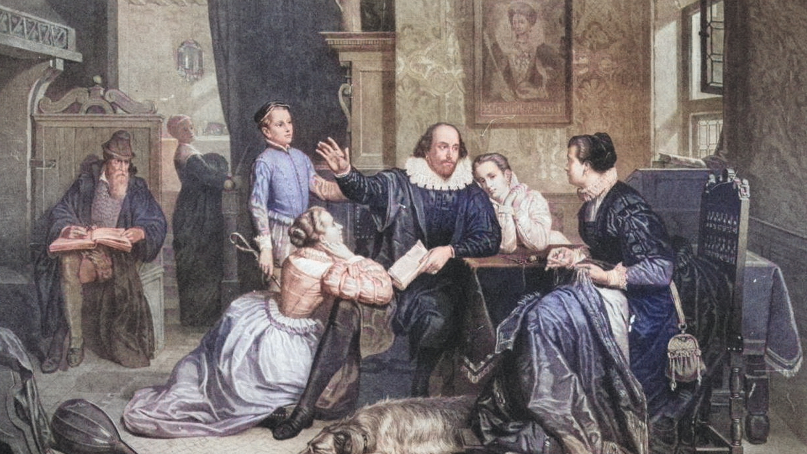
 Click the photo
Click the photo
Click the photo
Click the photo
 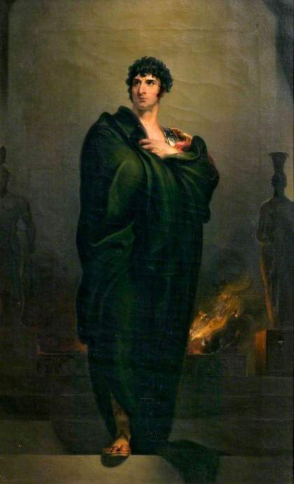
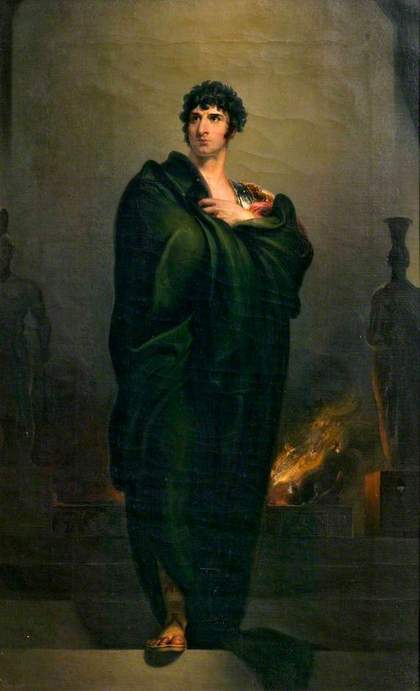


 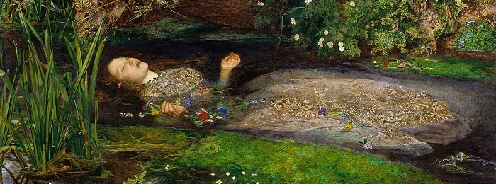
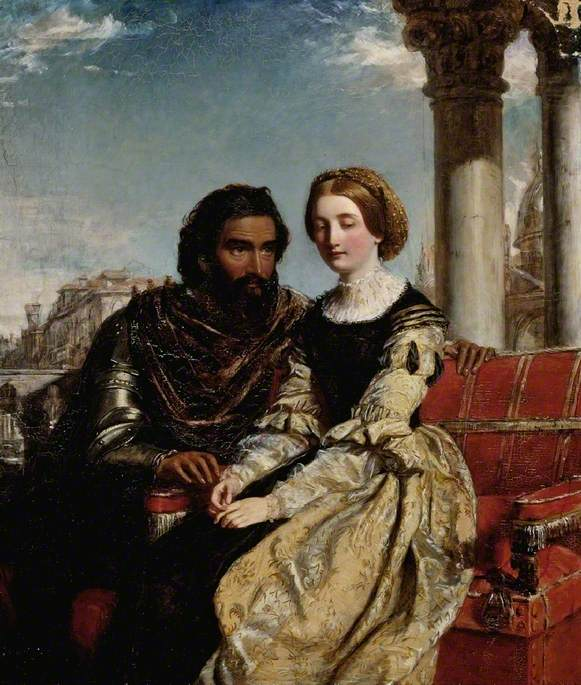
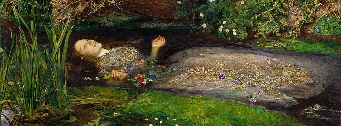
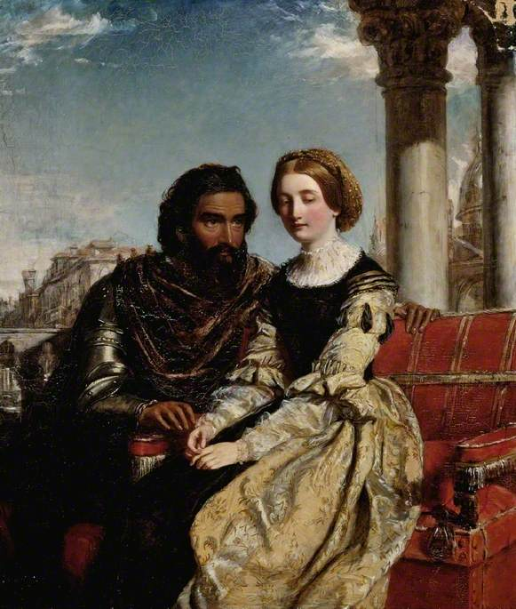
 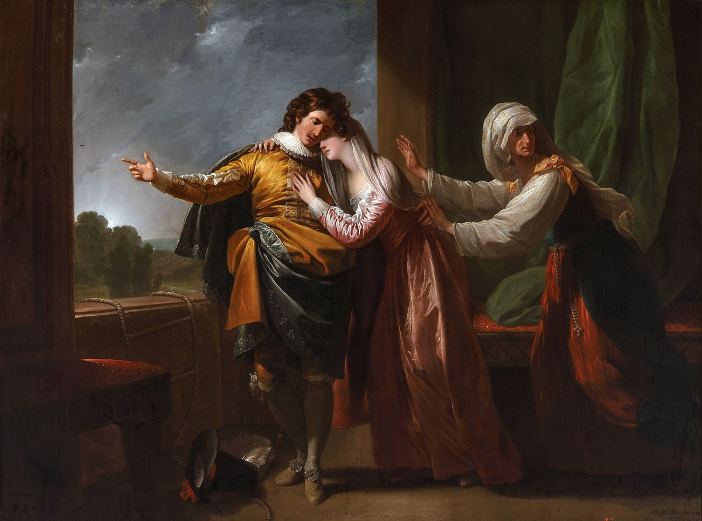
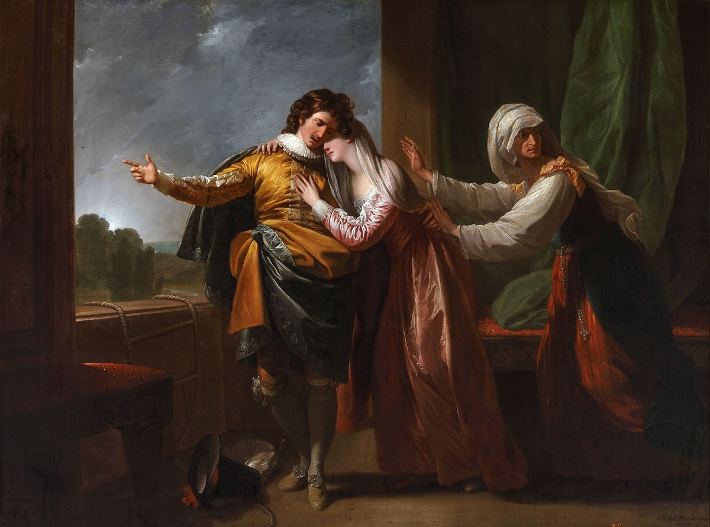

 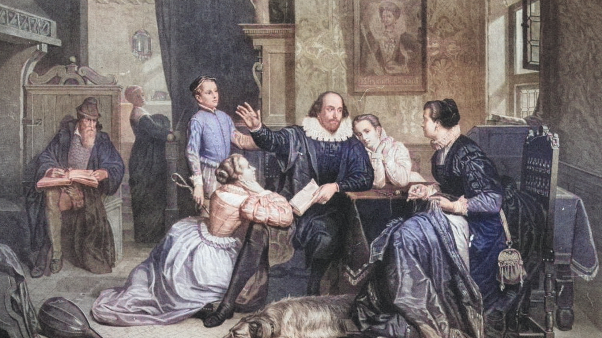
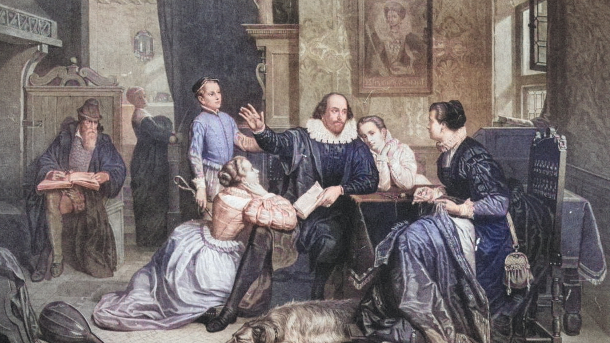